冰島 & 倫敦：冰火與皇室的交響曲
2024.02.23 - 03.06
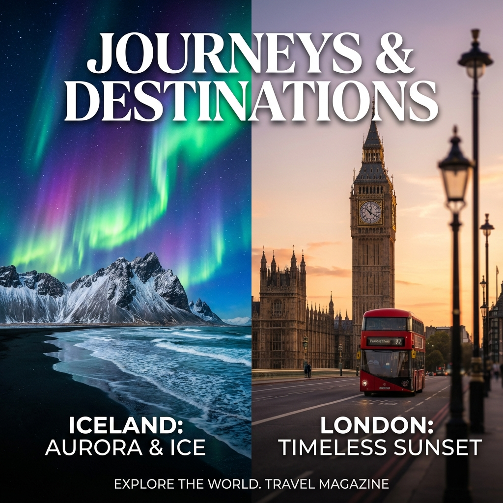
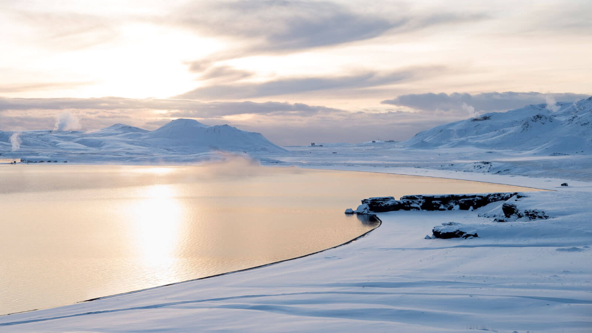
這不僅是一趟旅行，更是一場對比強烈的冒險。從冰島的荒涼與壯闊，到倫敦的精緻與古典。準備好你的相機與心靈，我們即將出發。
Did you know?
冰島 (Iceland) 其實應該叫 Green Land (綠島)，而格陵蘭 (Greenland) 才是 Ice Land。這是維京人為了防止敵人入侵這塊寶地而故意取的混淆名字。
冰島 (Iceland) 其實應該叫 Green Land (綠島)，而格陵蘭 (Greenland) 才是 Ice Land。這是維京人為了防止敵人入侵這塊寶地而故意取的混淆名字。
Pro Tip: 行前建議：下載 'Vedur' (天氣) 和 '112 Iceland' (安全) App。冰島天氣變化比翻書還快！
⚠️ 安全：冰島風速極大，開車門時務必抓緊，以免車門被吹反(保險不理賠)。
⚠️ 穿著：洋蔥式穿搭，防風防水的外套是必須的，雨傘在冰島基本無用。
⚠️ 自駕：冰島路況多變，請每天早上查詢 road.is 確認道路封閉狀況。
飛行日誌 (Flight Schedule) ✈️
02/23 去程：台北 ➜ 倫敦
BR67 | 08:40 出發 - 16:55 抵達
長榮直飛。建議在機上先調整作息，倫敦比台灣慢 8 小時。
02/24 轉機：倫敦 ➜ 雷克雅維克
FI451 | 07:35 出發 - 10:55 抵達
冰島航空機上沒有免費餐點，但有免費的無酒精飲料。記得選靠窗位，接近冰島時的俯瞰視角絕美。
03/03 返程：雷克雅維克 ➜ 倫敦
FI450 | 11:50 出發 - 15:00 抵達
告別冰島，返回英國開始城市之旅。
03/06 歸途：倫敦 ➜ 台北
BR68 | 21:15 出發 - 18:35 (+1) 抵達
這是長榮的晚班機，上機後吃個飯就能睡覺，調時差比較容易。
Day 1 | 02/23 (Fri)
啟程 (Departure)
🚩 Route: Taipei (08:40) ➜ London Heathrow (16:55) ➜ Crowne Plaza Hotel
🚗 Distance: Flight: 13h 15m
🚗 Distance: Flight: 13h 15m
🏨 Hotel: Crowne Plaza London Heathrow T4
機場過境旅館，養精蓄銳準備明天一早飛往冰島。
Day 2 | 02/24 (Sat)
抵達冰島 (Arrival in Iceland)
🚩 Route: KEF Airport (10:55) ➜ Costco ➜ 66°North ➜ Hótel Kría (Vík)
🚗 Distance: Drive: ~245 km (3.5 - 4 hr)
🚗 Distance: Drive: ~245 km (3.5 - 4 hr)
Costco Iceland (好市多)
冰島唯一的 Costco，也是物價昂貴的冰島救星。
Story
Costco 的熱狗套餐是冰島 CP 值最高的一餐。
Recommendation
⭐ 必買：大瓶裝水、可頌麵包、綜合堅果、加滿油！
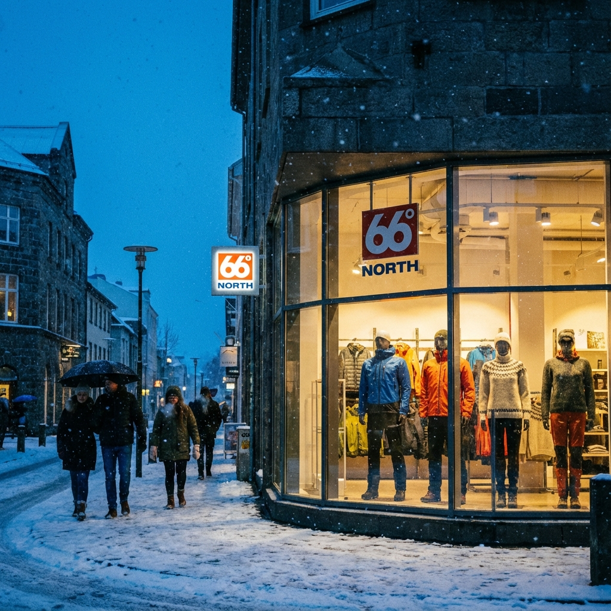
66°North (66度北)
冰島最知名的戶外機能品牌
Story
原為保護漁夫免受北大西洋惡劣天氣侵襲而創立。
Recommendation
⭐ 必買：羊毛帽或手套。
⚠️ 補給：離開雷克雅維克後超市較少，建議在 Costco 買足零食與水。
🏨 Hotel: Hótel Kría
位於 Vík 小鎮，設計現代的新穎飯店。
Day 3 | 02/25 (Sun)
黃金圈與南部 (Golden Circle)
🚩 Route: Hótel Kría ➜ Black Sand Beach ➜ Friðheimar ➜ Geysir ➜ Gullfoss ➜ Hótel Hamar
🚗 Distance: Drive: ~360 km (5 - 6 hr)
🚗 Distance: Drive: ~360 km (5 - 6 hr)
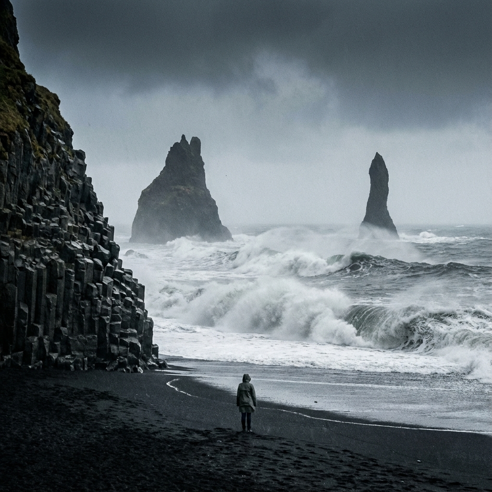
Reynisfjara Black Sand Beach (黑沙灘)
世界末日般的絕美黑沙灘。
Story
傳說中玄武岩柱是被陽光石化的巨魔。
Recommendation
⭐ 警告：嚴禁背對海浪，瘋狗浪極度危險。
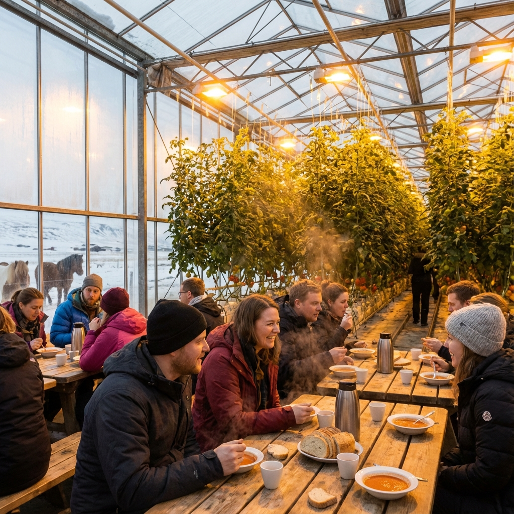
Friðheimar Tomato Farm (番茄農場)
在地熱溫室中享用獨特的番茄料理午餐 (12:00)。
Story
這裡一年四季都依靠地熱和人工照明種植高品質番茄。
Recommendation
⭐ 必吃：番茄湯吃到飽和現烤麵包。
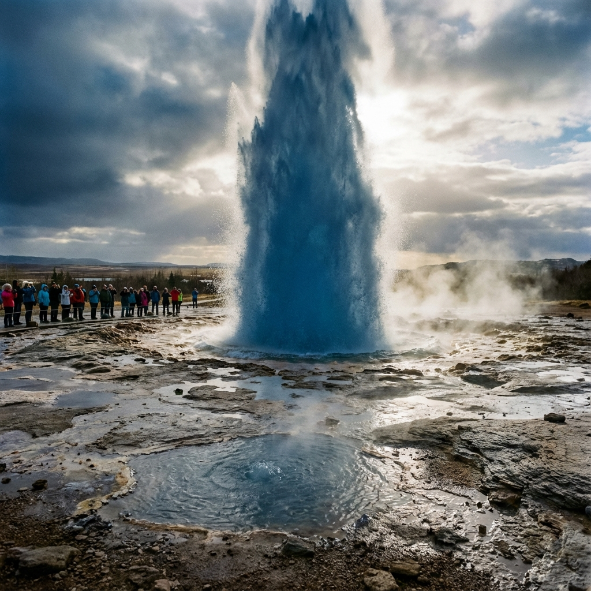
Geysir (間歇泉)
親眼見證每幾分鐘噴發一次的壯觀 Strokkur 間歇泉。
Story
所有間歇泉的英文 'Geyser' 一詞正是源自於此地。
Recommendation
⭐ 拍攝：將相機設為連拍模式，捕捉水柱噴出的瞬間。

Gullfoss (黃金瀑布)
氣勢磅礴的雙層瀑布，如同大地裂開的傷口。
Story
20世紀初曾有開發水力發電的計畫，被Sigríður Tómasdóttir力保才得以存留。
Recommendation
⭐ 觀景：走上下兩層觀景台感受不同的震撼力。
⚠️ 路程：今日車程較長，請把握白天時間，Gullfoss 結束後直奔 Borgarnes。
⚠️ 濕身：靠近古佛斯瀑布和間歇泉時水氣很大，相機要注意防水。
🏨 Hotel: Hótel Hamar
位於高爾夫球場旁，光害少，有機會看到極光。
Day 4 | 02/26 (Mon)
斯奈山半島 (Snæfellsnes)
🚩 Route: Hótel Hamar ➜ Ytri Tunga ➜ Búðakirkja ➜ Ingjaldshólskirkja ➜ Hótel Hamar
🚗 Distance: Drive: ~280 km (4 - 4.5 hr Loop)
🚗 Distance: Drive: ~280 km (4 - 4.5 hr Loop)
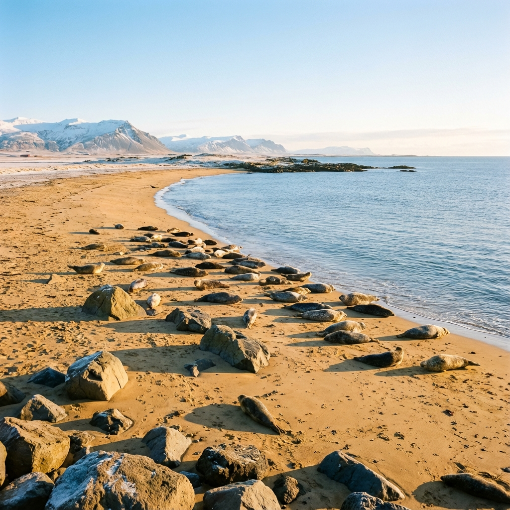
Ytri Tunga (海豹沙灘)
斯奈山半島著名的賞海豹地點。
Story
雖然冰島到處都是海，但這裡是海豹最喜歡曬太陽的地方之一。
Recommendation
⭐ 觀察：保持安靜距離，不要驚擾牠們。
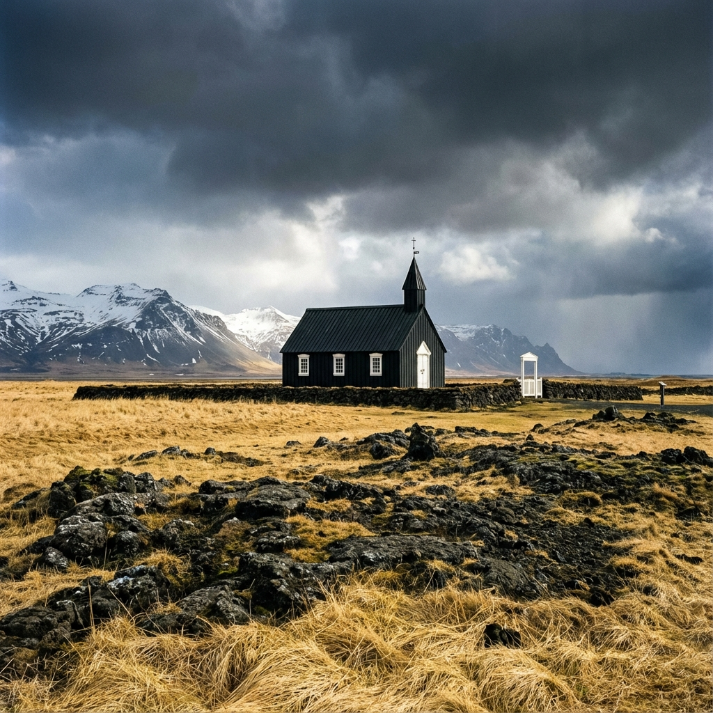
Búðakirkja (黑教堂)
矗立在熔岩原上的孤獨黑教堂，極簡美學的代表。
Story
這座教堂是冰島最受歡迎的婚紗拍攝地之一。
Recommendation
⭐ 攝影：黑色教堂與背後的雪山或綠草形成強烈對比。
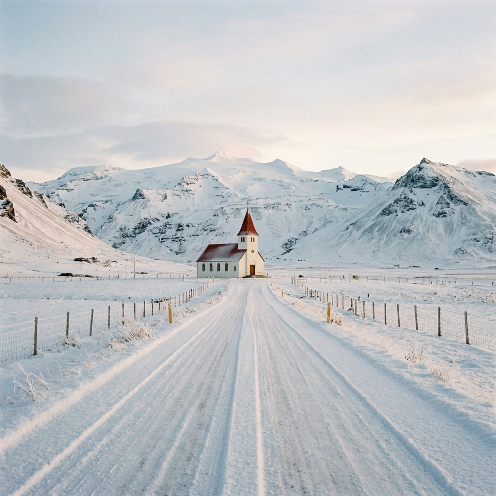
Ingjaldshólskirkja (紅白教堂)
位於山坡上的美麗教堂，是電影《白日夢冒險王》的取景靈感地之一。
Story
通往教堂的筆直道路是絕佳的構圖引導線。
Recommendation
⭐ 體驗：把自己想像成電影主角，拍一張奔跑的照片。
⚠️ 天氣：斯奈山半島風勢通常較強，行車時請握緊方向盤。
🏨 Hotel: Hótel Hamar
連住第二晚，享受寧靜的小木屋時光。
Day 5 | 02/27 (Tue)
南岸風光 (South Coast)
🚩 Route: Hótel Hamar ➜ Seljalandsfoss ➜ Fjaðrárgljúfur ➜ Pakkhus ➜ Hótel Jökulsarlon
🚗 Distance: Drive: ~410 km (5.5 - 6 hr - Long Day!)
🚗 Distance: Drive: ~410 km (5.5 - 6 hr - Long Day!)
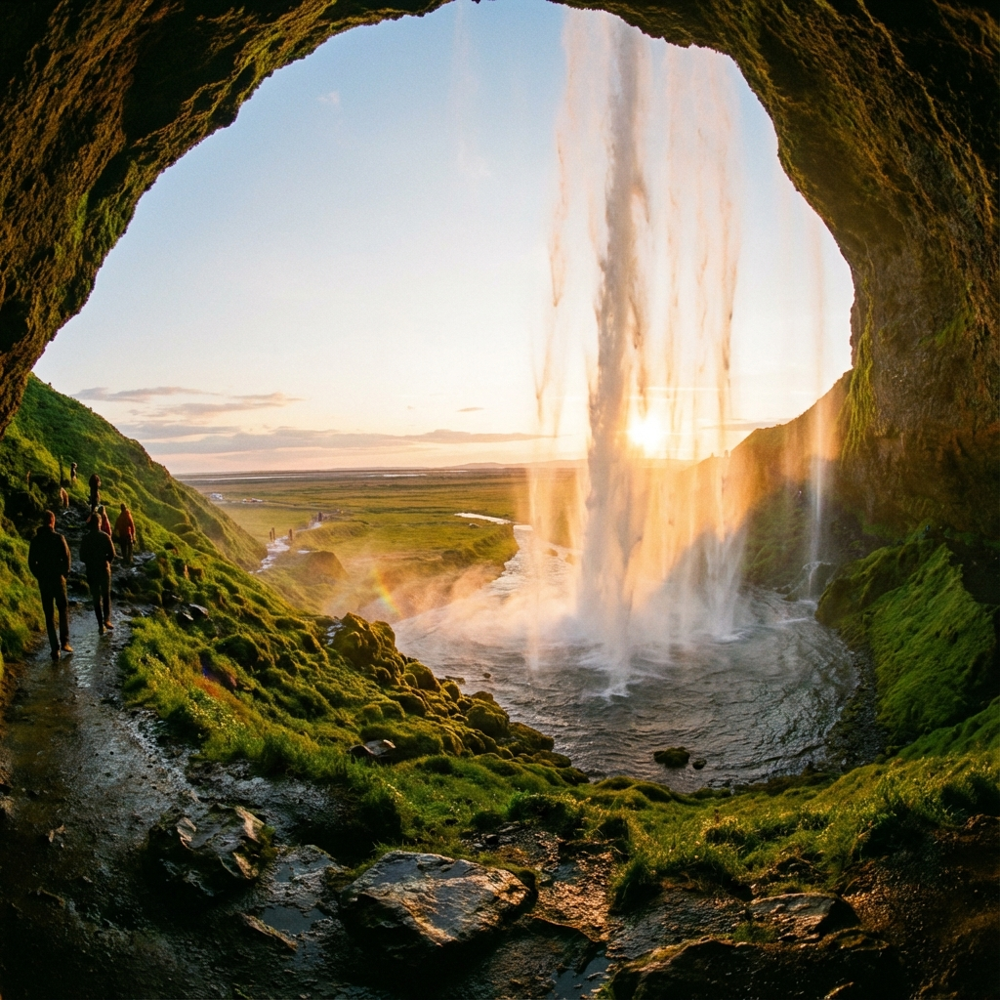
Seljalandsfoss (水濂洞瀑布)
可以走到瀑布後方的獨特瀑布 (冬季若結冰可能封閉)。
Story
日落時分，陽光穿透水簾的畫面最為迷人。
Recommendation
⭐ 裝備：如果要走到後方，務必穿著防水外套和褲子。
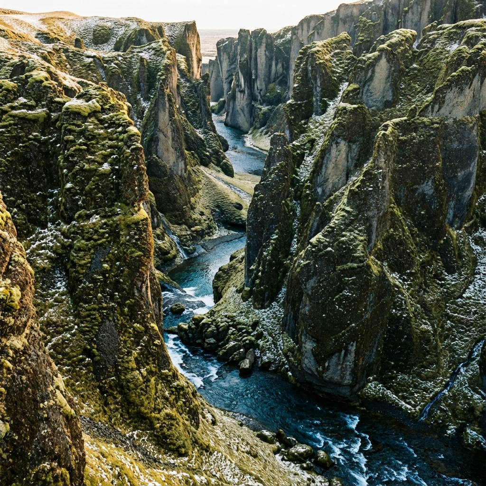
Fjaðrárgljúfur (羽毛峽谷)
深邃且蜿蜒的峽谷，景色如夢似幻。
Story
因 Justin Bieber MV 而爆紅的羽毛峽谷。
Recommendation
⭐ 步道：沿著邊緣步道走到觀景台，景色最壯觀。
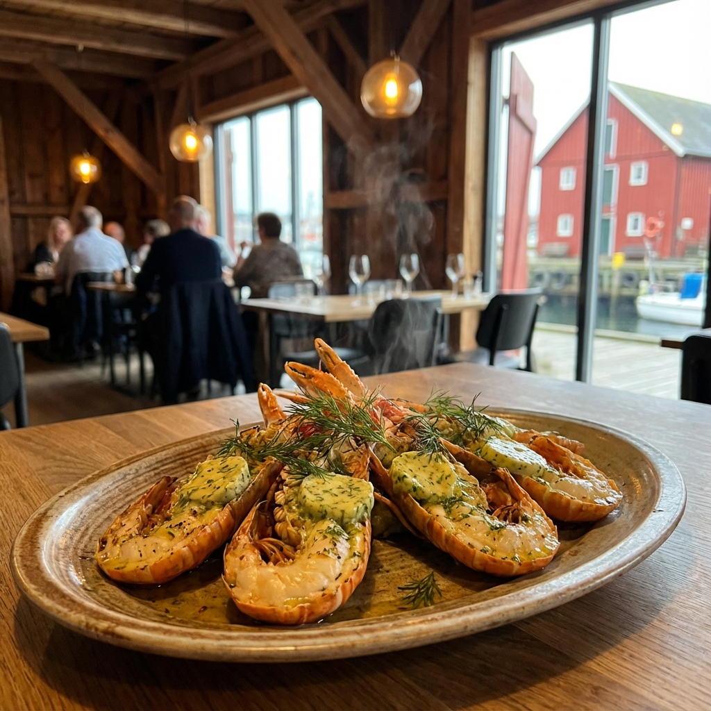
Pakkhus Restaurant (赫本龍蝦)
赫本鎮著名的龍蝦餐廳，享用鮮甜的海鰲蝦。
Story
小龍蝦 (Langoustine) 其實是挪威海鰲蝦，肉質比波士頓龍蝦更細緻。
Recommendation
⭐ 必點：烤海鰲蝦 (Langoustine)。
⚠️ 長途：今日車程很長，建議早上 8:30 前出發。
⚠️ 安全：南部一號公路冬季偶有強風，請注意 road.is 路況。
🏨 Hotel: Hótel Jökulsarlon (Glacier Lagoon)
高級且現代化的飯店，距離冰河湖僅幾分鐘車程。
Day 6 | 02/28 (Wed)
冰川健行 (Glacier Hiking)
🚩 Route: Hótel Jökulsarlon ➜ Blue Ice Cave Tour ➜ Diamond Beach ➜ Jökulsárlón ➜ Hótel Jökulsarlon
🚗 Distance: Drive: ~30 km (Local Activities)
🚗 Distance: Drive: ~30 km (Local Activities)

Blue Ice Cave Tour (藍冰洞)
深入瓦特納冰川內部，探索夢幻的藍色水晶宮殿 (10:00)。
Story
藍冰洞每年都會重新形成，形狀和位置都不同。
Recommendation
⭐ 體驗：請務必參加導覽團，跟隨專業嚮導穿戴冰爪進入。

Diamond Beach (鑽石沙灘)
黑沙灘上散落著如鑽石般閃耀的巨大冰塊。
Story
這些冰塊是從冰河湖漂流出海，被海浪打上岸的。
Recommendation
⭐ 攝影：尋找透明度高的冰塊，以此為前景拍攝海浪。

Jökulsárlón (傑古沙龍冰河湖)
巨大的冰塊在湖面上靜靜漂流，隨光線變化萬千。
Story
多部電影如《古墓奇兵》、《007》都曾在此取景。
Recommendation
⭐ 觀察：幸運的話可以看到海豹在冰塊間游泳。
⚠️ 集合：冰洞行程集合時間務必準時，逾時不候。
🏨 Hotel: Hótel Jökulsarlon (Glacier Lagoon)
連住第二晚，運氣好可以在飯店外看到極光倒映在冰河上。
Day 7 | 03/01 (Thu)
返回首都 (Return to Reykjavík)
🚩 Route: Hótel Jökulsarlon ➜ Skógafoss ➜ Reykjavik Consuls Hotel
🚗 Distance: Drive: ~380 km (5 - 5.5 hr)
🚗 Distance: Drive: ~380 km (5 - 5.5 hr)

Skógafoss (彩虹瀑布)
冰島最大、最壯麗的瀑布之一，晴天常能見到雙彩虹。
Story
傳說瀑布後方的洞穴埋藏著第一位維京定居者的寶藏。
Recommendation
⭐ 挑戰：爬上右側的 527 階樓梯，俯瞰瀑布和海岸線。
⚠️ 體力：又是一趟長途車程，中途可在 Skógafoss 休息。
🏨 Hotel: Reykjavik Consuls Hotel
Curio Collection by Hilton，位於市中心，風格優雅。
Day 8 | 03/02 (Fri)
市區觀光 (Reykjavík City)
🚩 Route: Reykjavík ➜ Sky Lagoon ➜ Hallgrímskirkja ➜ Courtyard Keflavik
🚗 Distance: Drive: ~60 km
🚗 Distance: Drive: ~60 km
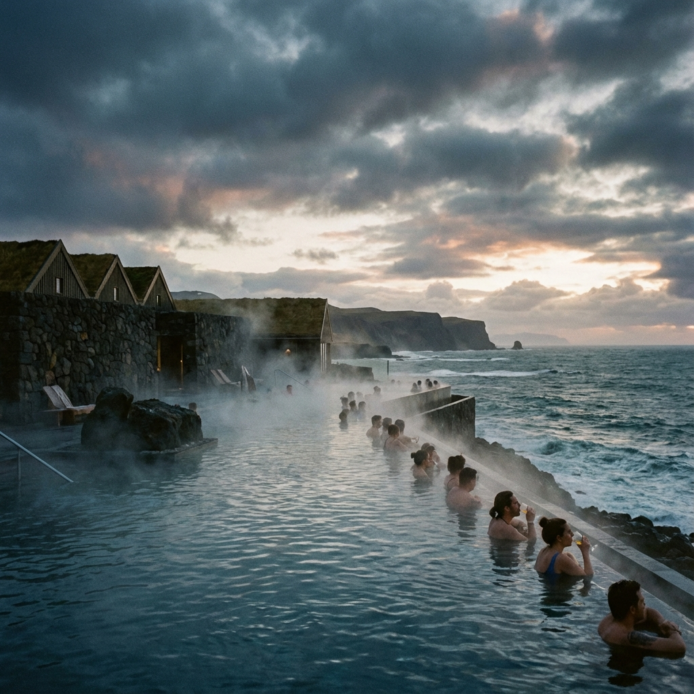
Sky Lagoon (天空之鏡溫泉)
懸崖邊的無邊際地熱溫泉。
Story
獨創的「七步儀式」能讓身心靈重新開機。
Recommendation
⭐ 時機：日落時刻是最夢幻的入場時間。

Hallgrímskirkja Church (哈爾格林姆教堂)
雷克雅維克市區地標，如玄武岩般的管風琴教堂。
Story
設計靈感來自冰島特殊的自然地貌——玄武岩柱。
Recommendation
⭐ 登頂：搭電梯上塔頂，360 度俯瞰彩色積木般的市區。
⚠️ 退稅：記得在機場前先整理好退稅單，若金額超過 6000 ISK 需海關蓋章。
🏨 Hotel: Courtyard by Marriott Keflavik
機場旁最新穎的飯店，方便明天退稅與搭機。
Day 9 | 03/03 (Sat)
倫敦饗宴 (London Dining)
🚩 Route: KEF (11:50) ➜ LHR (15:00) ➜ Page8 Hotel ➜ CORE by Clare Smyth
🚗 Distance: Flight + Tube
🚗 Distance: Flight + Tube
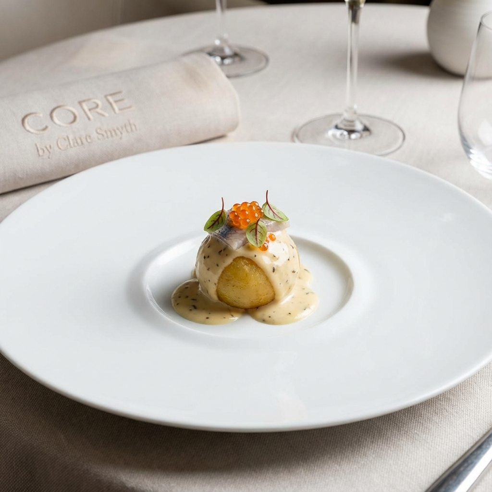
CORE by Clare Smyth (米其林三星)
米其林三星的極致優雅 (Notting Hill)。
Story
主廚 Clare Smyth 是首位獲得與維持三星殊榮的英國女性主廚。
Recommendation
⭐ 菜色：經典的 Potato and Roe 是必嚐招牌。
🏨 Hotel: Page8, Page Hotels
特拉法加廣場旁，位置絕佳的設計旅店。
Day 10 | 03/04 (Sun)
學術與購物 (Oxford & Shopping)
🚩 Route: Page8 Hotel ➜ Oxford ➜ Bicester Village ➜ Page8 Hotel
🚗 Distance: Train: ~1 hr each way
🚗 Distance: Train: ~1 hr each way
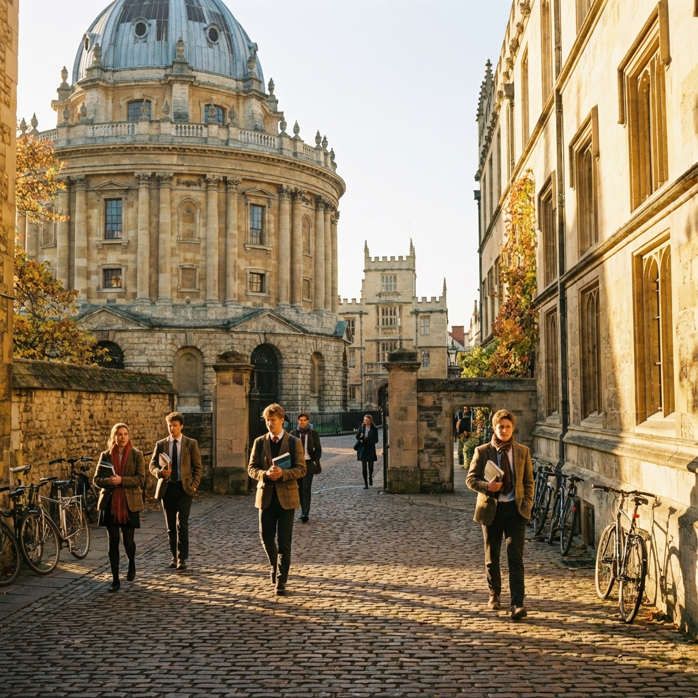
University of Oxford (牛津大學)
英語世界最古老的大學。
Story
這裡誕生了 28 位英國首相和無數的諾貝爾獎得主。
Recommendation
⭐ 景點：Radcliffe Camera 圖書館與基督教堂學院 (哈利波特場景)。

Bicester Village Outlet (比斯特購物村)
英國最受歡迎的名牌 Outlet。
Story
建築風格模仿傳統的牛津郡村莊，逛起來非常舒適。
Recommendation
⭐ 品牌：Burberry, Gucci, Prada 通常有不錯的折扣。
⚠️ 火車：建議提前預訂倫敦往返牛津的火車票，現場買票較貴。
🏨 Hotel: Page8, Page Hotels
連住第二晚。
Day 11 | 03/05 (Mon)
倫敦巡禮 (London City Tour)
🚩 Route: Page8 Hotel ➜ Big Ben ➜ British Museum ➜ Fortnum & Mason
🚗 Distance: Walk + Tube
🚗 Distance: Walk + Tube
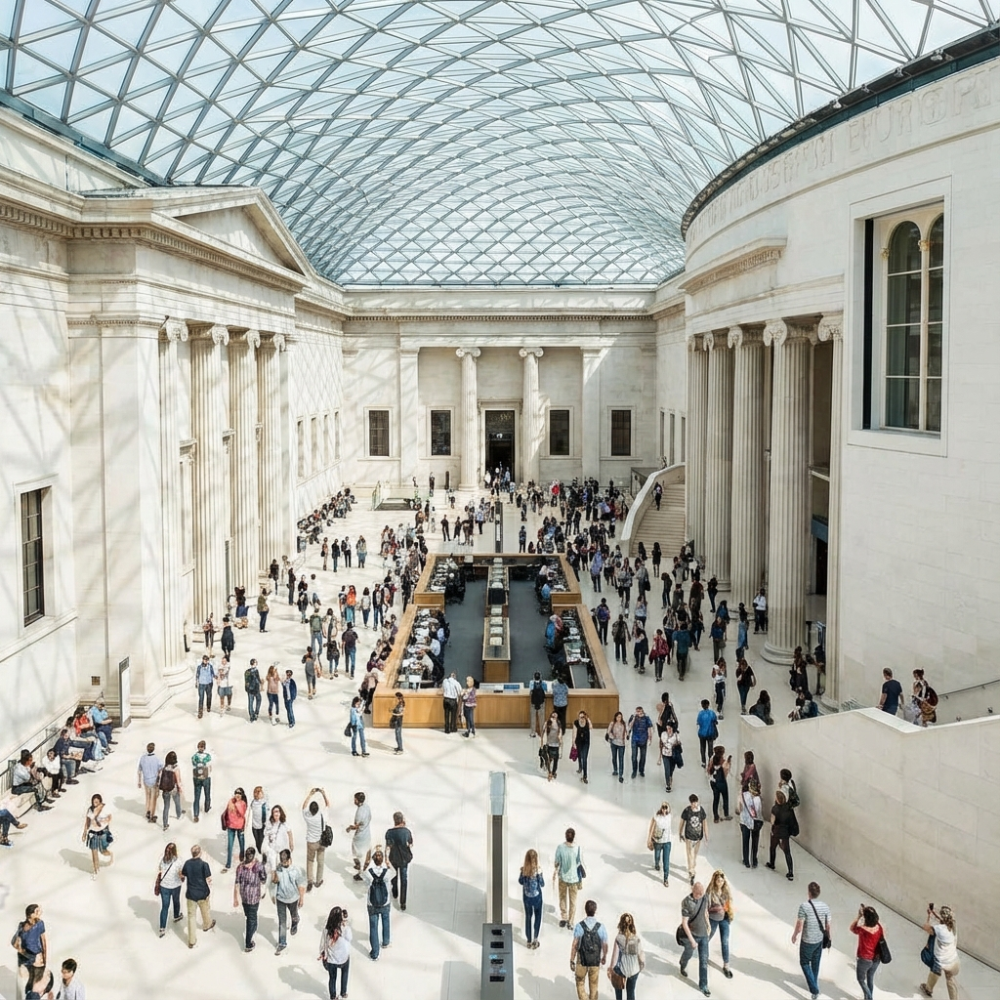
British Museum (大英博物館)
世界四大博物館之一，館藏豐富。
Story
館藏多達 800 萬件，但公開展出的只有約 1% (8 萬件)。
Recommendation
⭐ 鎮館之寶：羅塞塔石碑、帕德嫩石雕、埃及木乃伊。

Fortnum & Mason (皇家茶葉百貨)
皇家御用百貨，伴手禮首選。
Story
這裡發明了蘇格蘭蛋，並長期供應茶葉給英國皇室。
Recommendation
⭐ 體驗：除了買茶，一定要去 Diamond Jubilee Tea Salon 喝下午茶。
🏨 Hotel: Page8, Page Hotels
最後一晚，享受倫敦的夜生活。
Day 12 | 03/06 (Tue)
再會 (Farewell)
🚩 Route: London ➜ Heathrow Airport (21:15) ➜ Taipei (18:35+1)
🏨 Hotel: Home Sweet Home
帶著滿滿的回憶回到溫暖的家。